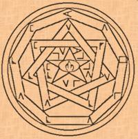

|
  If thou wish to bind the Spirits to Thy Will, thou shall Compound Ye Incense of Zkauba and proceed carefully. To observe the airial manifestations of the spirits, Make Ye Powder of Ibn Ghazi, and do not despise the Elder Sign. True visions of time yet to come shall be grabted by using Ye Unction of Khephnes Ye Egyptian. To
Fashion the Scimitar of Barzai, follow these rules attentively and
thou shall be granted of its vertue. |
 ook of Materials
ook of Materials
 e wise
Reader will find in these pages all the necessary devices for ye practice
of Ye Art. Powders, Talismans, Incenses, Unctions may become useful allies
on the road to Knowledge. Be advised of such
e wise
Reader will find in these pages all the necessary devices for ye practice
of Ye Art. Powders, Talismans, Incenses, Unctions may become useful allies
on the road to Knowledge. Be advised of such
 Table of contents Table of contents
|
Book
of Signs  |